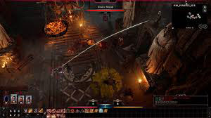
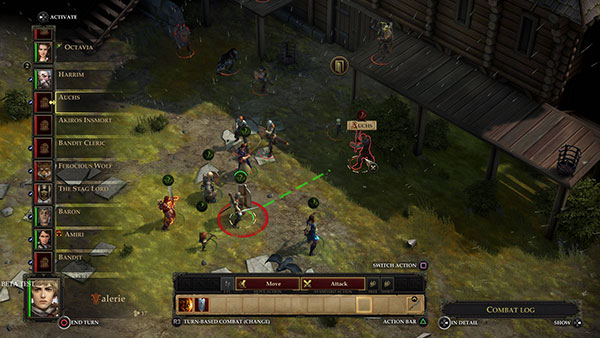
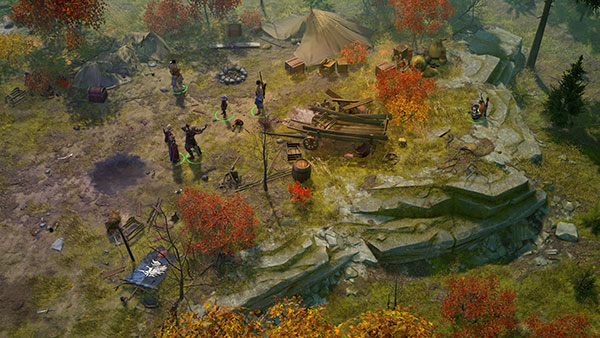

Baldur's Gate 3 is a game where you gather your party and make a return to the Forgotten Realms in a tale of betrayal and fellowship, survival and sacrifice, and the lure of absoulte power. You have a mysterious power and abilities that are awakening inside of you that comes from a mind flayer parasite that was planted into your brain. You can either resist and turn darkness against it self. Or you can choose to embrace the corruption and become the ultimate evil.
This game is the first single-player isometric CRPG that is set in the world of the best and top=selling D&D type role-playing game by Paizo. In this game you will roam the Stolen Lands and meet iconic characters that are ready to assist and accompany you through your journey. You will explore dungeons, solve puzzles, face some deadly creatures, and witness how your decisions will affect not only the environment but also the people that inhabit it. You will be able to establish a kingtond that can either bring hope, prosperity, and peace to the lands or you can take everything for yourself and drive it into the darkness. The choice is yours to make.
This game is the sequel to Pathfinder Kingmaker set 100 years or so after the events of that game. In this game you are in the realm of Sarkois which was destroyed when Areelu Vorlesh, a scholar and practitioner of forbidden magics, opened a rift to the abyssal plaes of existence, and let in hordes of demons that then invaded the world of Golarion. They are led by the evil Demon Lords of Baphomet and Deskari. The abyssal forces crushed all who stood against them and had turned Sarkois into a demon-infested land that is now called the Worldwound. You will join the Crusade against the demonic invasions and will rise as a new hero wielding unimaginable powers in this classic CRPG. The fate of this world lies in your hands.
